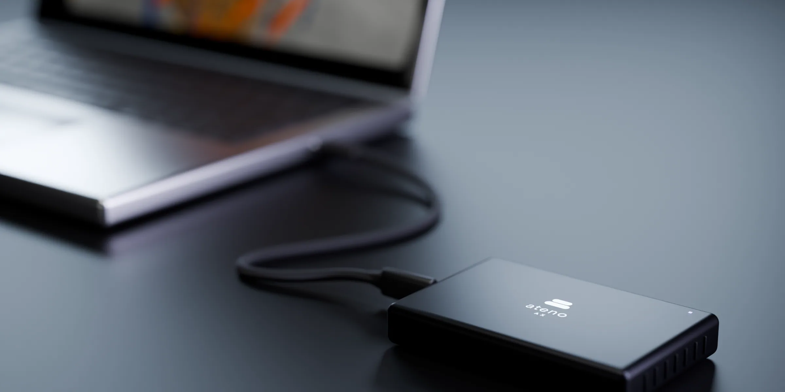
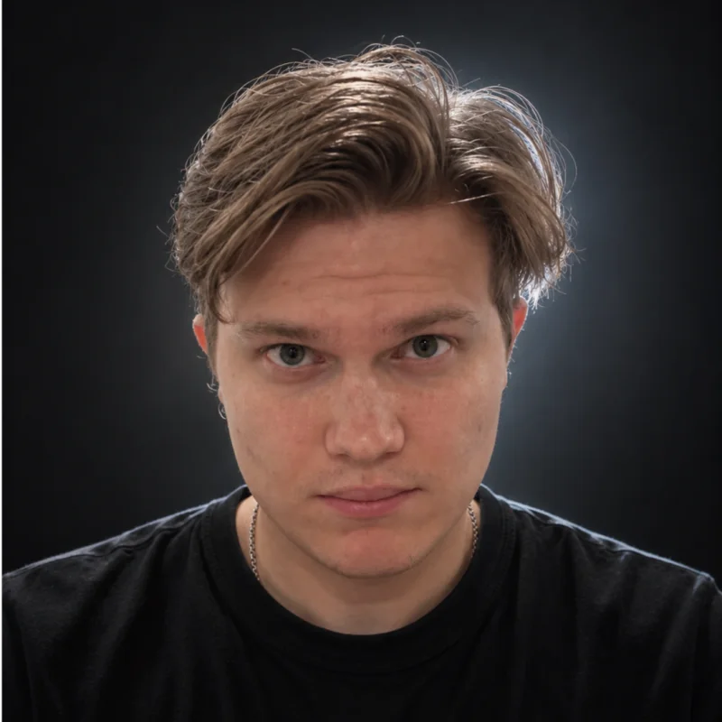
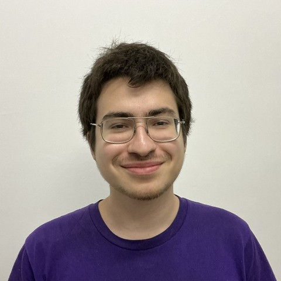

Ateno
Навигация,
не зависящая от GPS
Святослав Гладышев · сооснователь и CEO · info@ateno.co · Pre-seed · ноябрь 2026
Концепт-рендер
01 / 19
02 / Проблема
Каждая автономная система спрашивает:
где я?
01
Без GPS
Сигнал слабый, отражённый или его нет совсем.
02
Под землёй и в зданиях
В тоннелях, шахтах и зданиях сигнала нет.
03
Без связи
Надёжной связи с сервером нет. Карту нужно строить на борту.
Pre-seed · ноябрь 2026
02 / 19
03 / Сегодня
Лучшие 3D-карты дают гауссовы сплаты (3DGS).
Но для их построения нужен GPU из дата-центра.
3DGS-сцена в программном вьюере
0,4–5 к/с
Опубликованные Gaussian SLAM на NVIDIA Jetson. Слишком медленно для навигации.
4–24 ч
На реконструкцию большой сцены на GPU. Запись сейчас, карта потом.
20–80 ГБ
Видеопамяти для больших сцен. Бортовое железо и близко не подходит.
Pre-seed · ноябрь 2026
03 / 19
04 / Наш инсайт
Роботу не нужно смотреть на карту.
Ему нужно её построить.
77%
времени обучения 3DGS уходит на обратный проход и оптимизатор. Наше железо спроектировано вокруг этого.
Pre-seed · ноябрь 2026
04 / 19
Концепт-рендер
05 / Продукт
Ateno AX
Один чип строит карту и рендерит её.
На устройстве, без связи.
Вход
Кадры с собственных камер робота
Строит
3D-карту из гауссиан, обучаемую на чипе
Рендерит
Фотореалистичные виды, сейчас 1080p
Связь
Не нужна. Данные не покидают устройство
Формат
Модуль или IP-блок внутри SoC
Позы камер
Сейчас программно (COLMAP); на чипе — дальше
Статус
Рендеринг и обучение работают на FPGA
Pre-seed · ноябрь 2026
05 / 19

06 / Форм-фактор
Один небольшой модуль.
Подключается к роботу.
Первый продукт — edge-модуль с чипом. Позже тот же дизайн как IP-блок внутри SoC.
Концепт-рендер
Pre-seed · ноябрь 2026
06 / 19
Сборка иллюстративна. Финальный кадр — наш рендер на FPGA (AWS F2).
07 / Что уже работает
Этот кадр отрендерило наше железо.
173 161
гауссиан в сцене
2 073 600
пикселей посчитал наш дизайн
1080p
целиком на FPGA
Закрыт
тайминг на AWS F2
Pre-seed · ноябрь 2026
07 / 19
08 / Прогресс
С одной секунды до 262 мс.
За десять дней.
3,9×
быстрее кадр: та же сцена 1080p,
173 161 гауссиан, ядро FPGA на 100 МГц.
1,02 с
31 авг
262 мс
10 сен
Пока не быстро, и мы точно знаем почему: следующий слайд.
Pre-seed · ноябрь 2026
08 / 19
09 / Куда уходит время
Три четверти каждого кадра — сортировка.
Это мы чиним следующим.
262 мс
на кадр 1080p
Сортировка
75% · ≈197 мс
Фронтенд
19% · ≈50 мс
Рендер
6% · ≈16 мс
Измерено на нашей FPGA (1080p, 100 МГц); мс — доля от 262 мс. Наше узкое место, а не GPU.
Pre-seed · ноябрь 2026
09 / 19
10 / Обучение в железе
Другие ускорители умеют только рендер.
Весь цикл обучения работает на нашем FPGA.
01
Рендер
гауссианы → кадр
✓ На FPGA
02
Сравнение
с кадром камеры
✓ На FPGA
03
Backprop
градиенты
✓ На FPGA
04
Шаг Adam
новые гауссианы
✓ На FPGA
Повторяется тысячи раз на сцену
13×
быстрее шаг Adam на FPGA
против нашей CPU-версии (1 гауссиан)
723
тестов проходят
в регрессионном наборе
20
пунктов в нашей
патентной заявке в ОАЭ
Pre-seed · ноябрь 2026
10 / 19
11 / Дорожная карта
Сначала доказательство на FPGA.
Кремний — только потом.
Сделано · июнь–нояб 2026
Рабочий прототип
Рендеринг 1080p и полное обучение на FPGA. 723 теста проходят.
Этот раунд
Масштаб и эффективность
Большие реальные сцены. Бенчмарк энергии против Jetson и GPU.
После доказательства
Кремний
Выбор техпроцесса по измеренным требованиям. Tape-out с дизайн-партнёрами.
Никакого tape-out, пока производительность, энергопотребление и экономика не доказаны на FPGA.
Pre-seed · ноябрь 2026
11 / 19
12 / Рынок
Каждому движущемуся роботу
нужно видеть в 3D.
2,8 млн
мобильных роботов в год к 2030
(ABI Research)
$170–560 млн
в год на модулях при 20% проникновения и
$300–1 000 за штуку, только мобильные роботы
Без учёта дронов, других автономных систем и лицензирования IP. Сценарий, а не прогноз.
Pre-seed · ноябрь 2026
12 / 19
13 / Применения
Для автономных машин
там, где GPS ненадёжен.
Дроны в помещениях
Полёты внутри зданий, складов и промышленных объектов.
Наземные роботы
Неизвестная или меняющаяся местность, без связи с сервером.
Инфраструктура
Инспекция объектов, где данные должны оставаться на месте.
Тоннели и подземные объекты
Шахты, тоннели и подземные пространства без сигнала.
Всем им нужно одно: карта, построенная на борту, в реальном времени, без передачи данных наружу.
Карты: симуляции, иллюстрации
Pre-seed · ноябрь 2026
13 / 19
14 / Бизнес-модель
Три источника выручки.
01
Сначала
Дизайн-партнёрства
Производители дронов и роботов оплачивают адаптацию чипа под свою систему. Около $120 тыс. каждое.
02
Затем
Вычислительные модули
Бортовой модуль за $300–1 000 в каждом роботе, который строит карту.
03
На масштабе
Лицензирование IP
Роялти с каждого чипа для производителей SoC, встраивающих наш блок.
Выручки пока нет. Первое, что мы продаём, — дизайн-партнёрства.
Pre-seed · ноябрь 2026
14 / 19
15 / Конкуренты
Сегодняшние edge-чипы не создавались
для построения карт.
Кто
Что делают
Чего не хватает
NVIDIA Jetson, Qualcomm
Универсальные edge-вычисления
0,4–5 к/с на Gaussian SLAM
Edge-AI NPU
Ускоряют нейросети
Не под поток данных 3DGS; партнёры
Академические ускорители
GSCore, StreamingGS и другие
Не продукты; в основном рендер
Ateno
Обучение и рендер в железе
Сделан для робота
Pre-seed · ноябрь 2026
15 / 19
16 / Тракшн
Рано, но по-настоящему.
01
Пилот
Исследовательский пилот с группой S.M.A.R.T. Construction Research в NYU Abu Dhabi.
02
Индустрия
Крупная технологическая компания видит в нашей технологии сильный потенциал.
03
Спрос
30+ интервью с практиками; несколько готовы платить $3–5 тыс. за проект.
04
Патент
Подана патентная заявка в ОАЭ: 20 пунктов формулы на наше железо.
Выручки и LOI пока нет. Пилот неоплачиваемый; готовность платить — устная.
Pre-seed · ноябрь 2026
16 / 19
17 / Команда
От идеи до работающего железа
за пять месяцев.

Святослав Гладышев
Сооснователь и CEO
Математика в NYU; исследования экситонов в двухслойном графене. Ранее сооснователь и CTO LevelUp.

Артемий Мавлитов
Сооснователь и CTO
Отвечает за RTL. Data Science и математика в NYU. Призёр региональных этапов ICPC и CCPC.
Pre-seed · ноябрь 2026
17 / 19
18 / Раунд
Привлекаем pre-seed
на $1,25 млн.
01
Бенчмарк против GPU
Энергия на кадр: FPGA против GPU и Jetson, на реальных сценах.
02
Большие сцены
Обучение и рендеринг на больших реальных сценах.
03
Дизайн-партнёры
Первые платные проекты с производителями дронов и автономных систем.
Pre-seed · ноябрь 2026
18 / 19
Строим карту прямо на устройстве.
Без GPS. Без облака. info@ateno.co · ateno.co
Pre-seed · ноябрь 2026
19 / 19